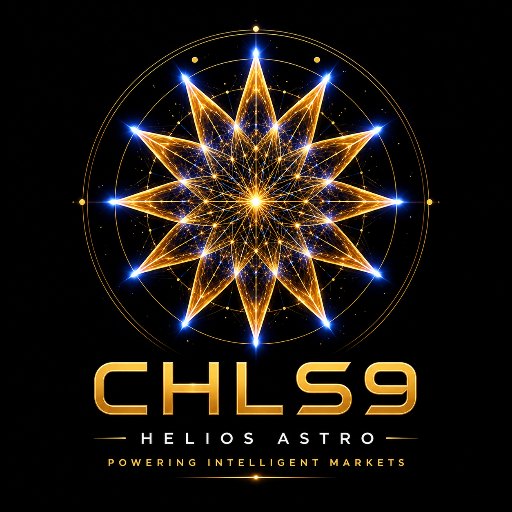

Solana
Infrastructure rapide, frais faibles, adaptée aux interactions numériques en temps réel.

ChromoHelios • CHLS9
CHLS9 relie HeliosAstro, Helios Photonic et les futures interfaces de visualisation, de données et d’expérimentation numérique.
Infrastructure rapide, frais faibles, adaptée aux interactions numériques en temps réel.
Connexion aux logiciels visuels, exports clients et interfaces astrologiques animées.
Support symbolique du laboratoire photonique, des rosaces et des flux colorés.